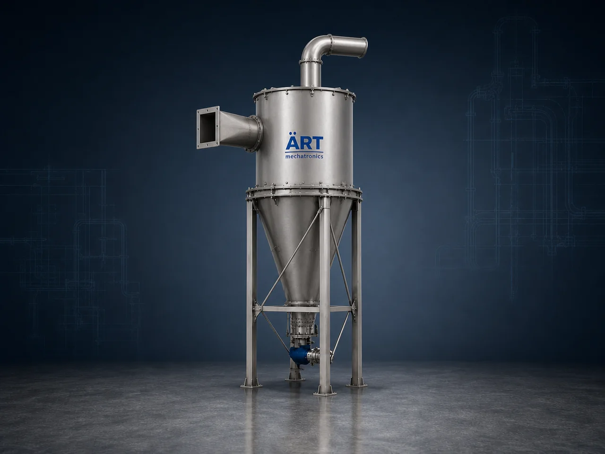

Cyclone Dust Collector Machine (Industrial Cyclone Separator for Dust & Particle Separation)
A Cyclone Dust Collector Machine, also known as an Industrial Cyclone Separator, is a highly efficient mechanical dust collection system designed to separate coarse dust particles from air using centrifugal force.

About the Cyclone Dust Collector Machine
Cyclone separators are widely used as a primary dust collection system or pre-filter before bag filters or cartridge dust collectors. They are ideal for industries generating heavy, large, and coarse dust particles.
These systems are commonly used in cement plants, woodworking industries, metal processing, food processing, grain handling, recycling, and material handling systems, where bulk dust needs to be removed efficiently.
ART Mechatronics manufactures robust and high-performance cyclone dust collectors, engineered for low maintenance, energy efficiency, and continuous industrial operation.
One machine, many names
Buyers search for this equipment under many terms — we manufacture all of them:
Working Principle of Cyclone Dust Collector
Dust-filled air enters the cyclone at high speed through:
Inside the cyclone:
Separated dust falls down into:
Clean air exits through:
This process enables efficient separation without filters
Types of Cyclone Dust Collectors
Cyclone Vs Bag Filter
Feature Cyclone Separator Bag Filter Dust Type Coarse particles Fine particles Filtration Mechanical Fabric filtration Maintenance Very low Moderate Efficiency Medium Very high Use Case Pre-cleaner Final filtration
Cyclone is often used as first stage separator
Industries Using Cyclone Dust Collectors
🏗️ Cement & Construction
- Cement plants
- Sand & aggregates
🪵 Wood & Furniture Industry
- Sawdust collection
- Wood cutting
🍃 Food & Agro Industry
- Grain handling
- Flour mills
🏭 Metal & Fabrication
- Grinding dust
- Shot blasting
♻️ Recycling & Plastic
- Plastic granules
- Waste processing
⚗️ Chemical & Powder Industry
- Bulk material handling
Features & Advantages
✔ No filter media required ✔ Low maintenance operation ✔ Handles high dust load ✔ Energy-efficient design ✔ Suitable for high-temperature applications ✔ Compact and robust construction ✔ Ideal as pre-cleaner for dust systems
Technical Highlights
- Airflow Capacity: Custom designed
- Efficiency: High for coarse particles
- Construction: Mild Steel / Stainless Steel
- Dust Discharge: Hopper / Rotary Valve
- System Type: Single / Multi Cyclone
- Integration: Can be combined with bag filter
Turnkey Cyclone Dust Collection Solutions
ART Mechatronics offers:
- System design & engineering
- Cyclone sizing & selection
- Integration with dust collectors
- Installation & commissioning
- After-sales service & AMC
Why Choose Art Mechatronics
- Expertise in industrial dust separation systems
- Customized cyclone design for each application
- Heavy-duty and durable construction
- High efficiency with low operational cost
- Proven performance across industries
Applications
- Cement Plants
- Wood Processing Units
- Food Processing Plants
- Recycling Plants
- Chemical Industries
- Material Handling Systems
Get pricing & specs for the Cyclone Dust Collector Machine
Share the product, target capacity, current process and plant location. These details help our engineers discuss the right machine or line configuration.
One partner, from design to start-up
ART Mechatronics designs, manufactures, installs and commissions your Cyclone Dust Collector Machine solution with regional presence in India, UAE and Thailand.